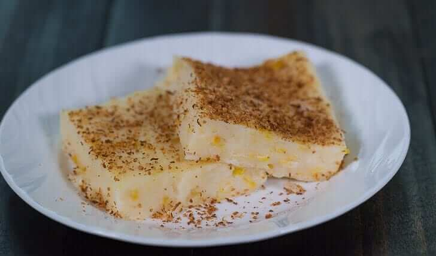

Maja Blanca

Description
Maja Blanca is a Filipino dessert made from coconut milk, cornstarch, and sugar. Often called Coconut Pudding, this luscious dessert is easy to make and the ingredients are very common.
Ingredients
- 4 cups coconut milk
- 3/4 cup cornstarch
- 14 ounces condensed milk
- 3/4 cup fresh milk
- 3/4 cup granulated sugar
- 15 ounces whole sweet kernel corn
- 5 tablespoons toasted grated coconut
Steps
- Pour the coconut milk in a cooking pot and bring to a boil.
- Add the sugar, condensed milk, and whole sweet kernel corn then stir until all the ingredients are evenly distributed.
- Simmer for 8 minutes
- Combine the milk and cornstarch then whisk until the cornstarch is diluted
- Pour the fresh milk and cornstarch mixture in the cooking pot and stir thoroughly.
- Allow to cook while stirring until the mixture reaches your desired thickness
- Pour the mixture in a serving tray then arrange and flatten the top using a flat tool such as a wooden spatula
- Allow to cool down then refrigerate for at least 1 hour
- Garnish with toasted grated coconut (or latik if available)
- Serve cold. Share and enjoy!
Nutritional Information
Serving: 8g Calories: 574kcal (29%) Carbohydrates: 68g (23%) Protein: 8g (16%) Fat: 31g (48%) Saturated Fat: 26g (130%) Cholesterol: 19mg (6%) Sodium: 176mg (7%) Potassium: 541mg (15%) Sugar: 47g (52%) Vitamin A: 170IU (3%) Vitamin C: 3.3mg (4%) Calcium: 187mg (19%) Iron: 4.1mg (23%)